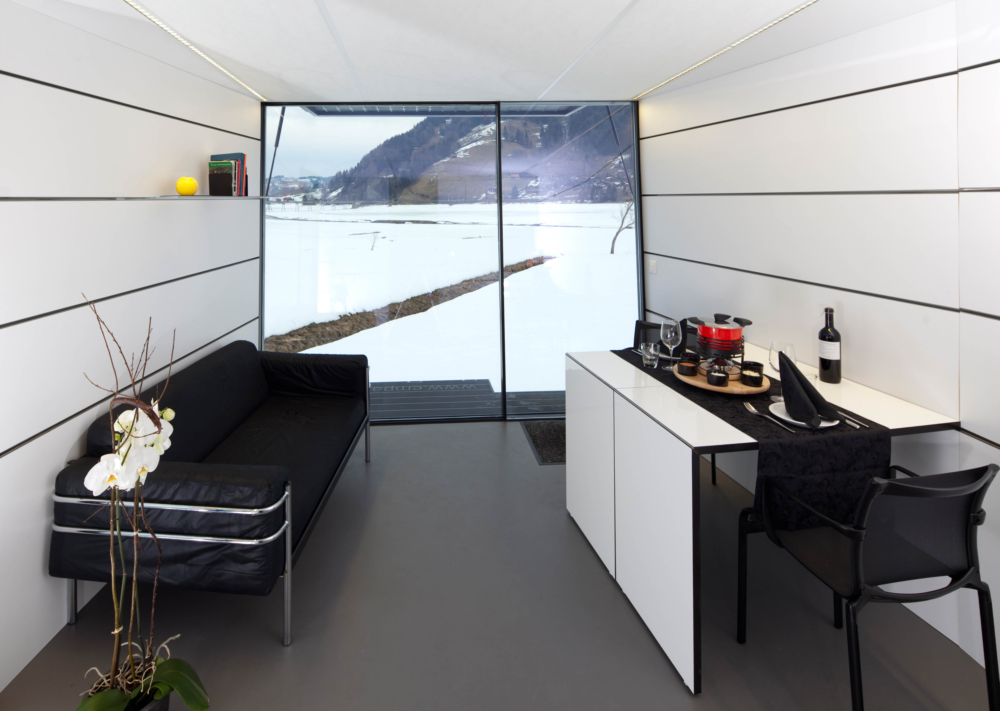

Verdunkelbares Fensterglas im Schlafzimmer. Ein Designer-Brünneli in der Küche. Ein Flachbildschirmfernseher an der Wand. Wenn man sich im Innern der Raumzelle Self aufhält, wähnt man sicher eher in einer topmodernen Neubauwohnung als in einer Forschungskonstruktion. «Es war uns wichtig, dass Self attraktiv daherkommt», sagt Mark Zimmermann, Architekt und Leiter des Forschungsprojekts an der Empa. «Durch die Gestaltung als Wohnraum wird die Aufmerksamkeit der Öffentlichkeit geweckt und die Akzeptanz unserer Entwicklungen gefördert.»
Neben den zwei Industriedesignern, die im Rahmen ihrer Diplomarbeit und im Auftrag der Empa das Aussehen der Raumzelle entworfen haben, waren diverse Forscher und Entwickler am Werk. Denn die Wohnung in der Grösse eines Schifffrachtcontainers, die sich mit Hilfe eines Sattelschleppers beliebig transportieren lässt, ist zugleich Kraftwerk und Forschungsplattform.
Energie vom Dach
«Die Raumzelle produziert ihren Strom selbst.» Zimmermann deutet auf das Dach, welches mit Fotovoltaikzellen ausgestattet ist. «Während rund neun Monaten kann damit aus dem Sonnenlicht Energie gewonnen werden.» Was aber passiert im Winter mit der Stromversorgung?
«Das Problem besteht darin, den produzierten Strom zu speichern», sagt Zimmermann. Er zeigt auf die zwei gut ein Meter langen Batterien, die unter dem Kajütenbett angebracht sind. «Das sind Lithium-Ionen-Batterien, wie sie auch für Handys eingesetzt werden. Nur eben viel grösser.» Der Vorteil gegenüber konventionellen Bleibatterien: Sie sind wesentlich kompakter und entladen sich bei Nichtgebrauch kaum. «Im Sommer erzeugen die Fotovoltaikzellen mehr Strom, als für den unmittelbaren Verbrauch benötigt wird. Mit den Batterien lässt sich dieser Überschussstrom für den Winter speichern», erklärt der Forscher.
Zehnmal geringerer Wasserverbrauch
Die insgesamt sechs überdimensionalen Handy-Batterien sind aber noch lange nicht alles. Zimmermann führt aussen herum zum hinteren Ende der Raumzelle. Hier schlägt das Herz von Self: Generatoren, Schläuche, Kabel, Schalter – ein Arsenal an Technik. Zimmermann führt seine Erklärungen fort: «Ein Teil des sommerlichen Energieüberschusses wird genutzt, um mittels Elektrolyse Wasserstoff zu produzieren. Dieser kann besser gespeichert werden als Elektrizität. Er wird zum Kochen und bei extremer Kälte zur Heizungsunterstützung eingesetzt.»
Die technologische Wundertüte wartet nicht nur mit einem ausgeklügelten Energieversorgungssystem auf. Self verfügt auch über eine eigene, durch die Eawag entwickelte Wasseraufbereitung. Auf dem Dach wird das Regenwasser aufgefangen und mittels Ultrafiltration zu Trinkwasser aufbereitet. Mit einem ähnlichen Verfahren wird auch das leicht verschmutzte Brauchwasser rezykliert, wodurch der Wasserverbrauch um das Zehnfache sinkt. Zimmermann: «Unsere Raumzelle ist vollkommen unabhängig. Sie braucht weder einen Strom- noch einen Wasseranschluss und kommt weg von nicht-erneuerbaren Energien. Zu beweisen, dass dies ohne wesentliche Einschränkung des Wohnkomforts möglich ist, war das Ziel unseres Forschungsprojekts.»
Tüfteln, testen, weiterentwickeln
Das Ziel ist fast erreicht. An der Basler Swissbau-Messe Mitte Januar haben Empa und Eawag ihre Entwicklung präsentiert. Mit Erfolg. Der Anklang sei gross gewesen, sagt Zimmermann. Der endgültige Beweis muss aber noch erbracht werden: «Wir stehen kurz vor der Inbetriebnahme. Die Raumzelle wird bis in den Winter getestet.» Ab und an würden die Forscher auch für kürzere Zeit in der Raumzelle wohnen.
«Self dient uns als Forschungsplattform, mit der wir zukunftsweisende Systeme ausprobieren, Probleme aufzeigen und Entwicklungen in die Wege leiten können.»
«Die wirkliche Innovation unserer Raumzelle sind nicht einzelne Technologien. Die gab es teilweise schon vorher. Neuartig ist deren Kombination», erklärt Zimmermann. Um mit dem Zusammenspiel verschiedener Technologien, Systeme und Materialien experimentieren zu können – und weil Tests an richtigen Gebäuden in diesem Ausmass zu teuer wären –, haben sich die Empa-Forscher für die Realisierung einer Raumzelle entschieden. Hier können sie herumtüfteln, ausprobieren, optimieren. So ist etwa die aus sechs Schichten verschiedener Materialien aufgebaute hochisolierende Aussenwandkonstruktion entstanden, die nicht nur die Innentemperatur optimal reguliert, sondern auch den Lärm von aussen schluckt. «Self dient uns als Forschungsplattform, mit der wir zukunftsweisende Systeme ausprobieren, Probleme aufzeigen und Entwicklungen in die Wege leiten können», sagt Zimmermann. Die einzelnen Komponenten – etwa die Energieform Wasserstoff oder die Dämmung – könnten in Zukunft für Gebäude übernommen werden. Und was wird aus Self, wenn es sich ausgeforscht hat? «Dann kann die Raumzelle zum Beispiel als Gästezimmer für Empa-Besucher genutzt werden», sagt Zimmermann. «Oder als mobile Forschungsstation in den Bergen.»